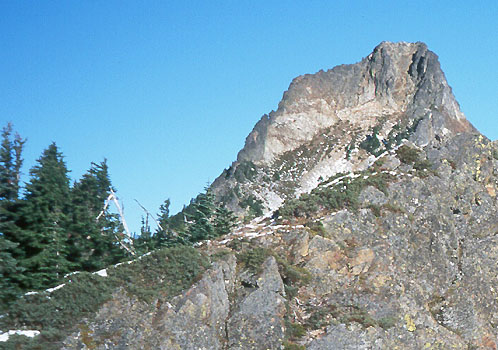
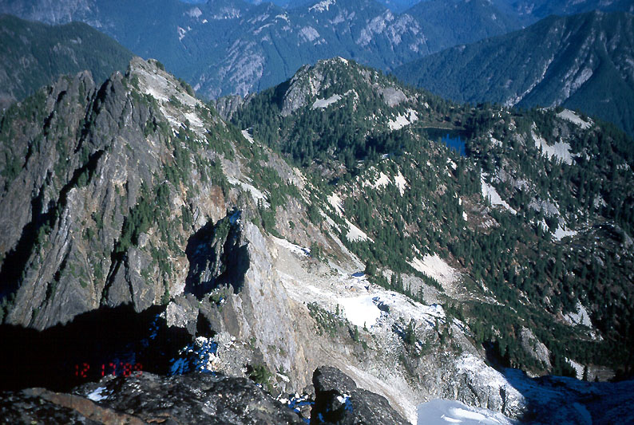
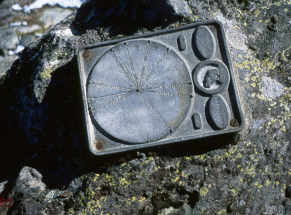
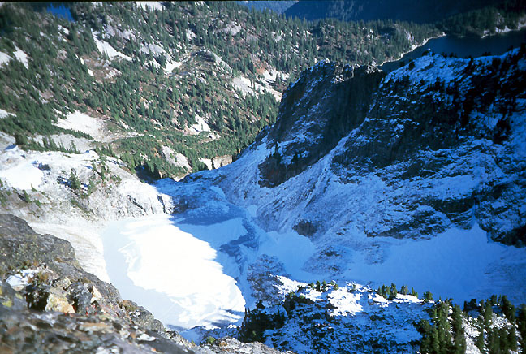
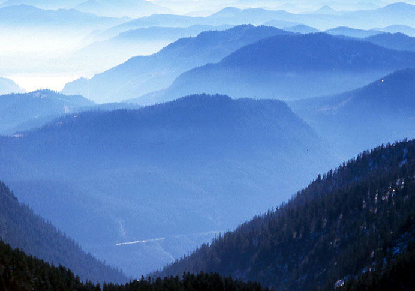
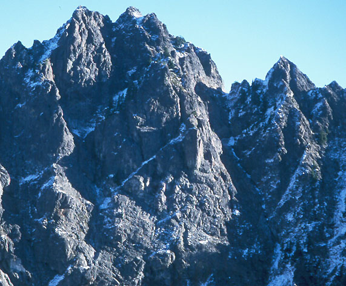

Kaleetan Peak South Ridge
I’d hoped to do this climb before work one morning with all the good weather we’d had, but there was far too much to do there, and I couldn’t justify it. So I promised Kris to just be away Saturday morning while she slept. But I failed to press the “alarm” button, and didn’t wake up until 7 am! I hurried out the door anyway, hoping to make it a quick climb.
The radio said it was 23 degrees in Everett. I hate the way NPR tells the same stories over and over this early in the morning. Finally I switched to a Jimi Hendrix CD. “Third Stone from the Sun” is one of my favorite songs.






At the trailhead, I started hiking quickly, shivering somewhat in the crisp air. It’s weird how this trail goes under the freeway. Cars roared by 250 feet above. I kept hiking, warmed up and enjoyed some sunshine and expanding views of the Denny Creek valley. The trail climbs in steps, reaching a middle tier protected from highway noise. Two campers came down, they had a very cold night at Melakwa Lake, but the stars were beautiful. Curious to see what Melakwa Pass looked like, I hastened on. I hiked up 2000 feet in the first hour, which made me tired on the way home. The pass was lightly forested, as I had read. From here, a short traversing descent on a very icy trail led to the lake, devoid of persons.
My instructions, courtesy of “Smoot’s Bible,” were to hike a short trail to the sanctioned latrine, then continue up a steep ridge to reach the peak. I did this in increasing snow, catching sight of tracks made some days before. The hike along the ridge was fun, and had a short rooty scrambling section. I came out of the trees to a large cairn and wide views. The west face of Chair Peak was intriguing, with many gullies and ledges. Continuing, I reached a point where the guidebook, (and associated tracks) advised descending to a shallow basin. With the fresh snow it looked kind of steep, and I preferred to be classy and sassy. I followed the brushy but jagged ridge crest, hoping that I could reach the base of the scramble route to the summit.
Sometimes I traversed on the west side, getting covered in snow from tree limbs and knee-deep drifts. Sometimes I followed rocks on the east, loving the warm sun and dry rock. Often I was right on the crest, but learned to be leery of descending the north sides of the towers. Slick, unconsolidated snow covered the slabs, making for insecure footing. On descents I tried to hand-traverse with my hands on the crest and body on the sunny east side, using nubbins and cracks for boot purchase.
If I make that sound hard it wasn’t, it’s just that the snow on the rock required me to be more careful on what would normally be a mindless scramble. The exposure down to the lake was exciting. It took me more than an hour to traverse that patch of ground, time I begrudged on my schedule, but it certainly was interesting!
I met the trail to the summit scramble, followed it to it’s logical conclusion, and emerged on top. It was 10:45 AM, 3.5 hours after I started. I sat in the still air, admiring the quiet hills in all directions. I loved being here, but I really wanted to spend time with Kris, so after a brief visit, I hurried down. This time I went into the basin, traversed it, and hiked back up to the ridge in somewhat difficult snow conditions. It was a light, slippery layer, just enough to obscure any trail that might exist in the steep heather. I pulled myself up the slope with the aid of shrubbery.
I made it back to the lake, drank some water, got cold, kept going. Going down from the pass I met countless parties, most with dogs. I tried to answer their questions truthfully, but I really had no idea how long it would take them from point X or Y. Now that I think about it, I was telling them what they wanted to hear! At first, I said “hmmm, a full hour.” The man expressed great disappointment, so for the next tired party, I lowered it to “45 minutes” (though this party was 400 feet lower).
In short, I am unreliable. I will lift your spirits only for the time being. When hopes are dashed on the rocks of darkness and hunger many hours later, my visage will float to the surface of the mind…“HIM!”
So I hurried all the more, reaching the car at 2:00, and home at 3:00, bearing groceries for a somewhat miffed, but ultimately forgiving wife.
I like to harass my friend Peter Chapman for a “Mountaineer’s Snoqualmie Summits Pin,” because I once read that organization gave them out at various lodge meetings. He says that doesn’t exist anymore. Curiously, he looks away when making such statements, and cites pressing business elsewhere when I inquire further. At this writing I’ve browbeaten my way up Thompson, Lundin, Red, Snoqualmie, Guye, Denny, Tooth, Chair, Kaleetan, Silver and Abiel. I posit that I am worthy to stand in some hallowed lodge, ruddy in the firelight, shivering with anticipation!
I guess I can make my own pin…